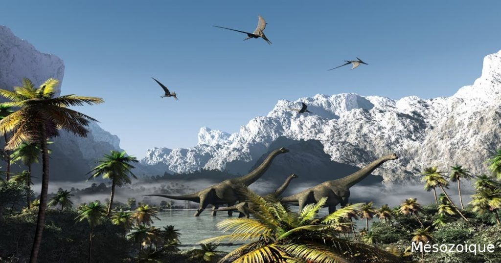
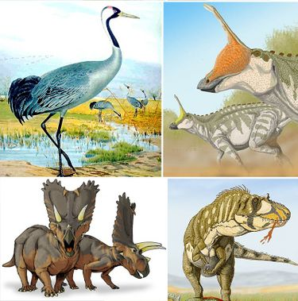

Le Mésozoïque (≈252 à 66 millions d’années) est surnommé l’ère des dinosaures, car ces reptiles dominent la terre ferme, tandis que les reptiles marins et volants occupent les océans et le ciel. Cette ère voit également l’apparition des premières plantes à fleurs et la diversification des mammifères primitifs. Le Mésozoïque est marqué par des changements climatiques, la fragmentation des supercontinents (la dislocation de Pangée) et une activité volcanique intense qui modifie les écosystèmes.
La fin du Mésozoïque est brutalement marquée par la grande extinction Crétacé-Paléogène, il y a 66 millions d’années, qui entraîne la disparition des dinosaures non aviens et de nombreuses espèces marines. Cette extinction ouvre la voie au Cénozoïque, ère des mammifères et des oiseaux, qui va voir la domination des vertébrés modernes et l’expansion des écosystèmes terrestres diversifiés.


Découvrez quel type de dinosaure vous seriez à l'ère du Mésozoïque !